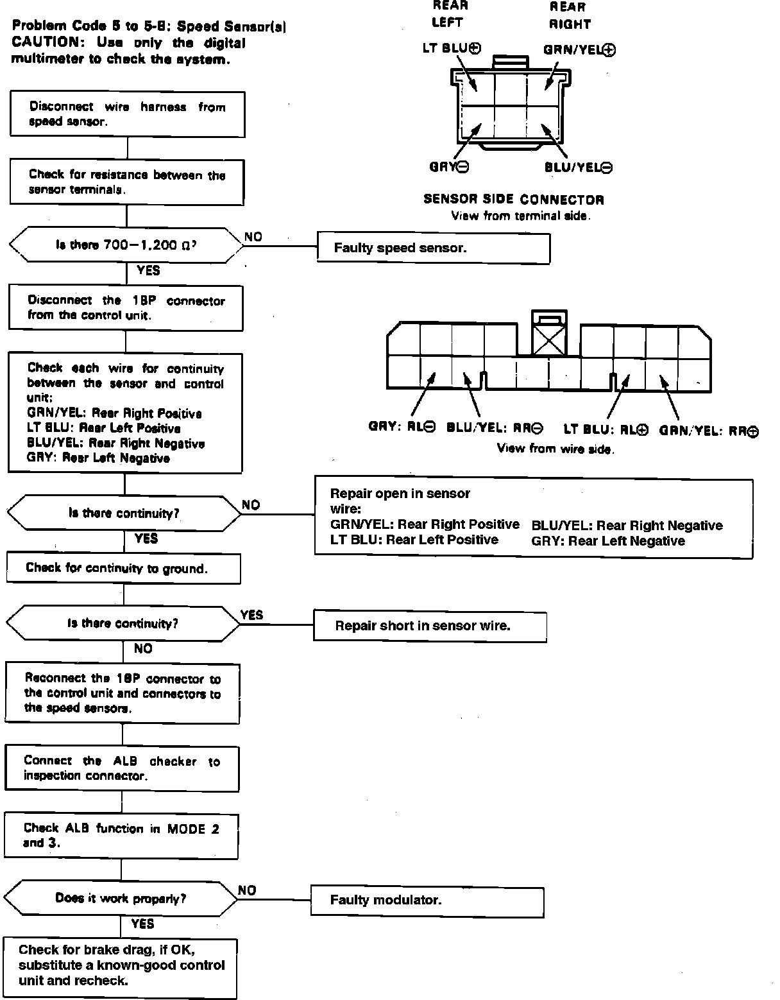

Operation CHARM
: Car repair manuals for everyone.
Home
>>
Acura
>>
1990
>>
Integra L4-1834cc 1.8L DOHC FI
>>
Repair and Diagnosis
>>
A L L Diagnostic Trouble Codes ( DTC )
>>
Testing and Inspection
>>
Manufacturer Code Charts
>>
Antilock Brake System
>>
DTC 5-4
DTC 5-4
Fig. 46 Trouble Code 5 To 5-8, Speed Sensors:
